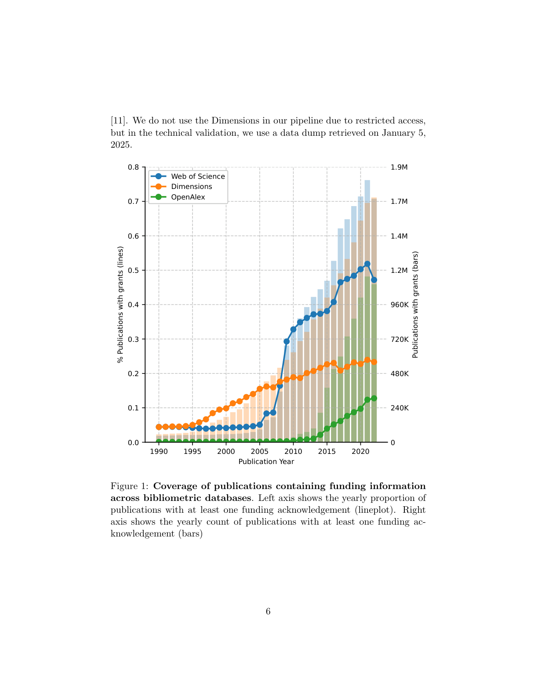

저자: Jacob Aarup Dalsgaard, Filipi Nascimento Silva, Jin AI | 날짜: 2026-03-25 | Journal: arXiv preprint (Scientific Data 제출 예정) | DOI: N/A | arXiv: 2603.24147

Figure 1
전 지구적 과학 펀딩을 연구 논문과 어떻게 연결할 수 있는가? 이 논문은 Web of Science에서 추출한 740만 개의 고유 펀딩 감사(acknowledgment) 문자열을 OpenAlex와 ROR의 표준 기관 식별자에 매핑한 대규모 데이터셋을 제시한다. 렉시컬 정규화, MinHash 유사도 클러스터링, 규칙 기반 매칭, 개체명 인식(NER), 수동 검증을 결합한 다단계 파이프라인을 통해 190만 개의 고유 펀더 문자열을 표준 식별자에 연결했다. 이 데이터셋은 펀딩 흐름, 지역 대표성, 글로벌 연구 시스템의 집중 패턴 분석을 지원하며, Global South 펀더의 저조한 대표성 문제를 처음으로 체계적으로 문서화한다.
Figure 1
Figure 1: 다단계 펀더 명칭 disambiguation 파이프라인 — 렉시컬 정규화부터 수동 검증까지의 처리 흐름
6. 타깃 수동 검증
| 항목 | 점수 |
|---|---|
| Novelty | 4/5 |
| Technical Soundness | 4/5 |
| Significance | 5/5 |
| Clarity | 4/5 |
| Overall | 4/5 |
총평: 글로벌 과학 펀딩 연구의 핵심 인프라 문제를 체계적으로 해결한 데이터 논문으로, 190만 개 펀더 매핑 데이터셋과 데이터베이스 간 편향의 정량적 비교는 과학계량학 및 과학 정책 연구의 중요한 기반이 된다.